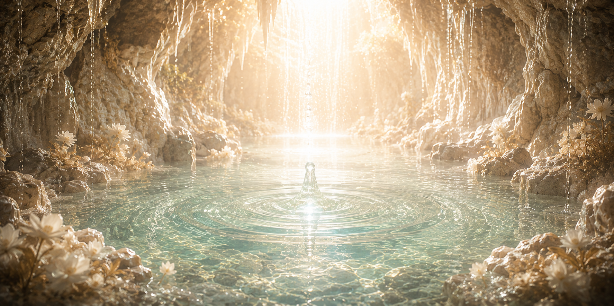

白黎泉について
すべての命を潤す、始まりの聖域

無垢なる源泉「白黎泉（はくれいせん）」
私たちが授かる「奇跡の水」。そのすべてが湧き出ている唯一の場所が、地下深くに存在する「白黎泉（はくれいせん）」です。
分厚い岩盤に守られ、地上のいかなる不浄も届かないこの場所は、天水恩寵会において最も神聖な領域とされています。悠久の時を経て大地に濾過された水が、静寂の中で一滴一滴と集まり、透き通った無垢なる泉を形成しています。この泉こそが、私たちの心身を浄化し、安らぎを与えてくれるすべての源なのです。
絶対的な聖域と守護
白黎泉は、ごく少数の選ばれた者以外、決して立ち入ることが許されない絶対的な聖域です。
この泉の清浄さを永遠に保つため、最高位の導位を持つ「源流守」たちが、昼夜を問わず厳重な管理を行っています。外界の空気にさえ触れさせないよう、神代防殻結界が敷かれており、そのおかげで私たちは常に淀みのない、純粋な奇跡の水を体内に取り込むことができるのです。
誓いの場としての白黎泉
白黎泉は、ただ水を汲み上げるだけの場所ではありません。教主が次代へと交代する際に執り行われる「深淵戴水の儀」は、必ずこの泉の御前で行われます。
新しき教主は、白黎泉の無垢なる水面に己を映し、すべての信徒を慈愛で包み込み、この聖なる水を護り抜くという大いなる誓いを立てます。教主の誓いと祈りが溶け込むことで、白黎泉の水は私たちの魂を救済する「奇跡の水」へと昇華するのです。